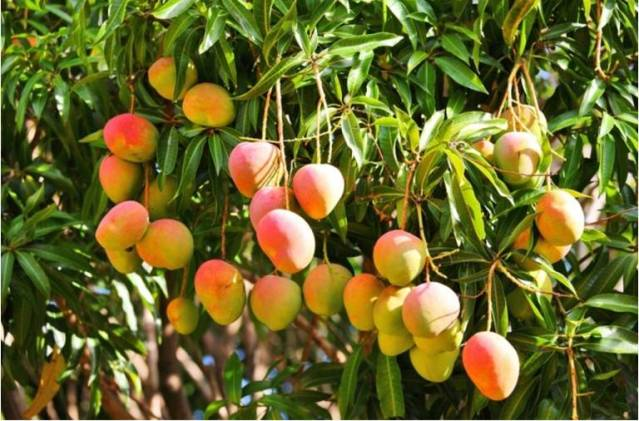
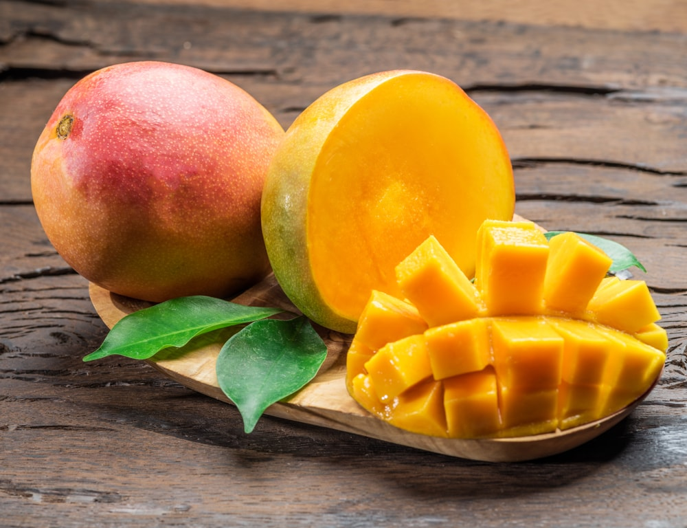
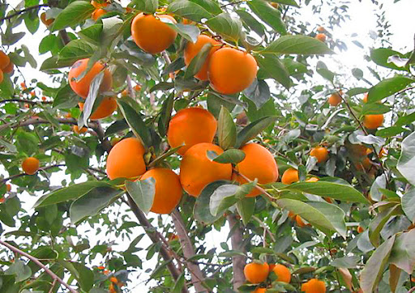

<html>
    <head>
        <title>Манго Хурма</title>
        <link href="St.css" rel="stylesheet" style="text/css">
    </head>
</html>
<body>
    <h1>Манго</h1>
   <div class="m"> 
    Ма́нго — плоди рослини роду Манго (Mangifera) 
    <br>
    Плоди манго індійського мають волокнисту структуру та сладкий смак, шкірка пофарбована в тони червоного, зеленого чи жовтого кольорів, у м'якоті колір жовтий чи оранжевий.
    один із найвідоміших сортів манго— «Альфонсо»
    <br>
    <br>
    
    <br>
    <br>
    Точні дані щодо походження манго невідомі. Манго індійське, ймовірно, виникло у Південній Азії на території від Пакистану до Індонезії.
    <br>
    Слово манго походить від португальського слова манга (manga) від дравідійського слово манкай де ман означає "дерево манго", а кай - "плід".
    Назва «манго» з'явилося у Європі під час торгівлі прянощами з Південною Індією у XV та XVI століттях.
    <br>  
    <br>
    Вигляд Манго індійське має велике сільськогосподарське значення. У 2009 році у сільському господарстві по всьому світу вирощується понад 300 сортів цього виду. (До 1969 року було відомо близько 200 сортів.) 
    Один із найбільших експортерів цього виду манго – Індія.
    Індія збирає близько 13,5 млн. тонн плодів манго (дані за 2009 рік) і є, таким чином, головним виробником.
    збирання та продаж індійського манго відбувається в період з березня по травень.
    У Європі манго культивується головним чином Іспанії на Канарських островах.
    <br>
    <br>
    
    <br>
    <br>
    Плоди манго часто використовуються у домашній медицині в Індії та інших азіатських країнах.
    Наприклад, в Індії манго застосовують для зупинки кровотеч, для зміцнення серцевого м'яза та для кращої роботи мозку.
    Зелені недозрілі плоди містять у собі у великих кількостях крохмаль, який у міру дозрівання перетворюється на прості вуглеводи: сахарозу, глюкозу та мальтозу.
    Крім того, незріле манго – цінне джерело пектину, проте після утворення у плоді твердої кісточки його кількість суттєво зменшується. 
    Завдяки вмісту в ньому лимонної, щавлевої, яблучної та бурштинової кислот незрілий плід дуже кислий на смак.
    Також зелене манго багате на вітамін С (вдвічі більше, ніж у лаймі), є в ньому й інші вітаміни: B1, B2, ніацин. 
    <br>
    <br>
    
    <br>
    <br>
    Манго - національний фрукт Індії, Гаїті та Філіппін. Це також є національне дерево держави Бангладеш.
    </div>
    <h1>Хурма</h1>
    <div class="h">

    Хурма - рід субтропічних і тропічних вічнозелених дерев і чагарників. Дерева хурми можуть доживати до 500 років. 
    У багатьох видів плоди їстівні, деякі тропічні види є джерелом цінної деревини — ебенового дерева.
    Хурмою називають плоди низки видів, зазвичай яскраво-жовтогарячі великі зі світлою м'якоттю і м'ясисті 1-10-насінні ягоди. Незрілі плоди хурми мають в'яжучий смак і можуть викликати розлади шлунково-кишкового тракту.Незважаючи на відносно високий вміст цукру, хурма не сприяє різкому підвищенню цукру
    в крові і на 100 г продукту містить всього 62 ккал. Яскраво-жовтогарячий колір хурми говорить про те, що в ній високий вміст бета-каротину та біофлавоноїдів. Стигла хурма містить у 100 г, від денної норми, 25 % цукрів, 1,5 % протеїну, 0,85 % жирів, до 55 % вітаміну С, дубильні речовини, різні мікроелементи, у тому числі йод, залізо, магній, калій.
    Види цього роду мають пантропічне поширення з найбільшою різноманітністю в Індомалайській області.
    <br>
    <br>
    
    <br>
    <br>
    Латинська назва роду, має грецьке походження і може бути перекладена як "їжа богів", інше значення - "божественний вогонь".
    У російську мову слово «хурма» потрапило з фарсі, де в оригіналі звучить як خرمالو khormâlu — фінікова злива. Назва khormâlu спочатку належала до кавказької хурми. В'ялена хурма за 
    смаком дуже нагадує фініки, звідси і походить назва кавказької хурми на фарсі. Потім ця назва поширилася інші види хурми, зокрема і східну (японську).
    Види зі їстівними плодами можуть називати: дикий фінік, фінікова cлива. 
    <br>
    <br>
    У культурі рослини поширилися, мабуть, із Китаю. Заради плодів рослини культивуються в багатьох країнах Євразії, Америки та в Австралії, де зустрічаються і свої ендемічні види.
    Завдяки великому вмісту корисних  речовин, хурму рекомендують вживати людям із захворюваннями серцево-судинної системи, гіпертонією, анемією. На Кавказі хурму їдять у великих кількостях за ранніх форм токсичного зоба. 
    У Китаї та Японії хурмою лікують атеросклероз, а соком – цингу, у Таїланді – виганяють кишкових глистів, у Кореї хурма вважається протизапальним засобом та використовується при лікуванні дизентерії, ентероколітів та бронхітів. Ефективність дієти, багатої хурмою, у нормалізації ліпідного обміну підтверджується науковими дослідженнями. Плоди хурми сприятливо впливають на стан печінки та жовчовивідних шляхів. Хурма має яскраво виражений сечогінний ефект.М'якуш хурми має бактерицидні властивості, тому включення до раціону хурми під
    час епідемій вносить свій внесок у загальне лікування. Розрізану навпіл хурму в деяких країнах прикладають до опіків та ран. Хурма корисна при виснаженні (і нервовому, і фізичному).Народна медицина використовує, крім плодів, листя хурми. Висушене листя хурми вважається біологічно активним, тому чай з них корисний людям похилого віку, а також хворим на анемію. Пропарене листя накладають на рани, що гнояться, і нариви. Плоди хурми можна вживати у свіжому вигляді, висушувати, варити з них варення, десерти, робити сидр, патоку, вино, 
    пиво та самогон.Обсмажене та подрібнене насіння вірмінської хурми використовувалися солдатами армії Конфедерації та населенням штатів Півдня під час Громадянської війни в США як замінник кави.
    <br>
    <br>
    
</body>